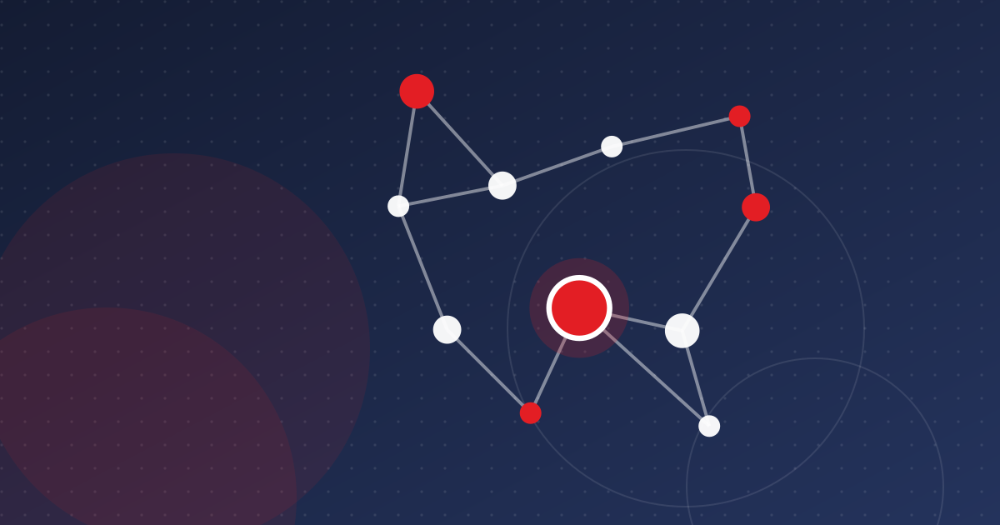

Tunisia Fintech Ecosystem Map: Who's Who in 2026
From the BCT to Ooredoo's new payment institution, Konnect and the ANAVA fund of funds: a practical map of who does what in Tunisian fintech.

Key takeaways
- The BCT is the gatekeeper for any product that holds customer funds; the Startup Act label is not a financial licence.
- The BCT counted 22 resident banks and 6 payment institutions at end-2025, and Ooredoo's OFT Tunisie was approved in March 2026.
- Circular 2026-10 updates payment-institution rules and confirms they operate in dinars and inside Tunisia only.
- The $60 million ANAVA fund of funds, managed by Smart Capital, is the backbone of early-stage venture funding.
Tunisia's fintech ecosystem is small but crowded. A central bank tightly controls who may hold customer money. About twenty banks dominate distribution. The national postal operator runs its own payment rails, and a growing group of licensed payment institutions and startups fights for space between them. This map sets out who does what, as of autumn 2026, and where a new founder fits.
The regulators: who licenses what
Four authorities matter most for a Tunisian fintech:
- Banque Centrale de Tunisie (BCT). It supervises banks, financial institutions and payment institutions, sets foreign-exchange rules and runs the fintech regulatory sandbox. It is the gatekeeper for any product that touches deposits, payment accounts or cross-border flows.
- Conseil du marché financier (CMF). It regulates the capital markets, including the framework for crowdfunding platforms.
- The microfinance supervisor (ACM) for microcredit institutions, and the insurance regulator for insurtech.
- The Ministry of Communication Technologies and Smart Capital, which run the Startup Act label. The label brings tax and social-security benefits. It does not give a licence to provide financial services.
The rules for payment institutions are changing. On 25 September 2026 the BCT published circular no. 2026-10, which replaces circular 2018-16 and takes effect three months after publication. According to La Presse, it confirms what these institutions may do: dinar payment accounts, cash-in and cash-out, transfers, payment instruments, receiving funds from abroad and manual currency exchange. It also imposes audit, risk and compliance functions. All of this applies only in dinars and only inside Tunisia.
Banks and La Poste: the incumbents
The BCT's annual report for 2025, as summarised by Tuniscope, counts 47 licensed banks and financial institutions. They include 22 resident banks, 7 non-resident banks and 8 leasing companies, with 2,081 bank branches at the end of 2025. Banks still issue almost all payment cards and hold most customer relationships. Several have opened their own innovation programmes. BIAT runs the BIATLABS incubator, and Attijari Bank announced a fintech pilot programme with Beta-i and Betacube in late 2021.
The Office National des Postes is the other incumbent. With its e-Dinar cards and the D17 app, it reaches customers that banks often miss.
Payment rails and switches
Behind every transaction sits shared infrastructure:
- Sibtel runs the interbank clearing system, created in 1999. In May 2024 the BCT admitted two payment institutions, Zitouna Pay and Payvago, as members. This lets non-banks clear transactions with banks directly.
- The national card switch and e-commerce gateway, which handle domestic card interoperability and online card acceptance.
Card payments still dominate electronic retail payments. The BCT recorded 164.9 million card transactions worth 29.5 billion dinars in 2025, compared with 8.4 million mobile payment transactions.
Payment institutions, wallets and PSPs
This is where most fintech activity happens. At the end of 2025, the BCT's annual report counted 6 payment institutions. Other names have since been licensed or are in the pipeline:
- OFT Tunisie, a subsidiary of Ooredoo FinTech International, received final approval as a payment institution. It was published in the Official Journal on 14 March 2026 and must start operating within six months. African Manager reported that this brought the number of approved payment service providers to 16, counting payment institutions and financial institutions that offer digital payments.
- Zitouna Pay, Payvago and First Pay, which Managers reported was approved as a resident payment institution in August 2024.
- Konnect Networks, the first holder of the BCT's payment facilitator licence. In May 2025 it raised an undisclosed round from investors including Attijariwafa Ventures and Visa.
- Flouci and Paymee, two of the best-known wallet and merchant-payment brands. Flouci has worked with banks such as BTE.
Wallet use is growing from a low base. The BCT counted 469,000 mobile wallets in 2025, up 26.8%. Mobile payments rose 58.6% in value to 1,769 million dinars.
Investors and support structures
Public money is the backbone of early-stage finance. The ANAVA fund of funds is a $60 million vehicle managed by Smart Capital, with money from CDC Tunisie (World Bank-supported) and KfW. As of February 2025 it had committed about €45 million across 10 venture funds, according to Launch Base Africa. Those funds include 216 Capital, Flat6Labs, MEDIN's Titan Seed Fund, Silicon Badia, Janngo Capital and LoftyInc.
Accelerators such as Flat6Labs Tunis, Orange Fab, BIATLABS and The Dot sit alongside these funds (see incubators and accelerators).
What the map means for founders
- Pick your licence path early. A product that holds funds needs a payment institution licence or a partner bank. The sandbox can be a first step.
- Banks are both competitors and distribution. Most fintechs that scale in Tunisia partner with a bank, La Poste or a licensed institution rather than going around them.
- The cross-border limit is real. Circular 2026-10 confirms that payment institutions operate in dinars and inside Tunisia only, which shapes any regional plan.
- Watch the new entrants. A telecom-backed payment institution such as OFT Tunisie, with an agent network, could change the economics of mobile payments for everyone.
Companies in this article
Frequently asked questions
Who regulates fintech in Tunisia?
The Central Bank of Tunisia (BCT) licenses and supervises banks, financial institutions and payment institutions and runs the fintech sandbox. The CMF regulates capital markets and crowdfunding. Microfinance and insurance have their own supervisors.
How many payment institutions are there in Tunisia?
The BCT's 2025 annual report counted 6 payment institutions at end-2025. In March 2026 Ooredoo's OFT Tunisie received final approval, and African Manager put the total of approved payment service providers, including financial institutions, at 16.
Does the Startup Act label allow a fintech to offer payments?
No. The label gives tax, social-security and foreign-currency account benefits, but any activity involving customer funds needs a BCT licence or a partnership with a licensed institution.
Sources
- Le secteur bancaire tunisien gagne du terrain avec plus de 2.000 agences — Tuniscope
- OFT Tunisie obtient l'agrément définitif de la BCT — African Manager
- BCT : circulaire n° 2026-10 relative aux établissements de paiement — La Presse
- Zitouna Pay et Payvago intègrent le système tunisien de télécompensation interbancaire — Kapitalis
- Meet the VC funds deploying Tunisia's $60m ANAVA fund of funds — Launch Base Africa
- BCT : le chèque s'effondre en Tunisie, les virements et la lettre de change prennent le relais en 2025 — Webmanagercenter
This article is for information only and is not legal, financial or investment advice. Figures are dated and sourced; check the latest official publications before making decisions.